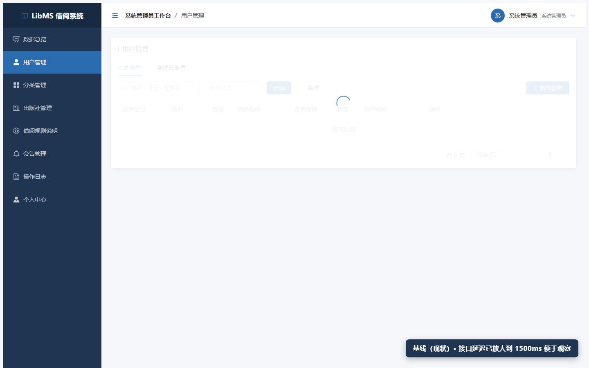
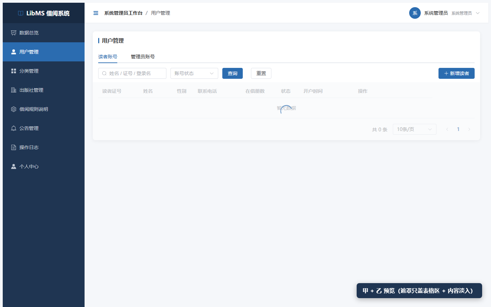

甲 + 乙 预览（含对照视频）
LibMS · 2026-09-15 · 同一段菜单切换流程，上半段基线、下半段甲+乙
为了看得清，视频里把接口延迟放大到了 1500ms（实测真实只有约 55ms）。
不放大每秒只有 55ms，任何录屏都只能拍到一两帧、根本看不出差别。
右下角有文字标注当前是哪一段。真实时间数据见《预览-切换页面闪白.html》。
对照视频
若此处无法播放，可直接打开同目录的 甲+乙-对照预览.webm 文件。
关键差异（静帧对照）

基线：遮罩盖住整张卡片 —— 标题、Tab、搜索框、按钮、表头全糊了

甲+乙：标题、Tab、搜索框、按钮、表头全部清晰，只有表格数据区在转圈
这两条分别做了什么
- 甲：把
v-loading 从页面根节点下移到数据区（el-table）。
落地时是 15 个页面各挪一次指令位置；本预览为了不改源码，用运行时把遮罩裁剪到"从表格顶端开始"来等效模拟，
视觉结果与真正下移一致。
- 乙：遮罩不透明度 0.9 → 0.5（让底下结构透出来）＋ 新内容 0.18s 淡入（把"啪一下弹出"变成"渐显"）。
注意：光把遮罩改成灰色是没用的（实测只差 2.24%），降不透明度才有效。
落地代价
- 甲：15 个
.vue 文件各改一处 —— <div v-loading="loading" class="page-card">
里的 v-loading 移到内部表格上。
- 乙：
styles/index.css 一条遮罩背景 + 一条 @keyframes 动画。
- 不碰
<transition>（本项目已有"页面空白"前科）、不上 keep-alive。